오디오 디스크 굽기:
Burn은 대부분의 일반적인 오디오 CD를 만들 수 있을 뿐만 아니라 MP3 디스크도 만들 수 있습니다. 대부분의 최신 장비들은 MP3 디스크를 인식하고 재생할 수 있습니다. 오디오 CD는 기록 가능한 CD에만 구울 수 있습니다. MP3 디스크는 어떠한 디스크에도 구울 수 있습니다. Burn은 비교적 흔하지 않은 형식인 DVD 오디오 디스크도 구울 수 있습니다. 몇몇 가정용 DVD 플레이어는 이런 디스크를 재생할 수 있습니다. 이 방식의 디스크는 매우 높은 음질의 오디오를 저장할 수 있습니다. 이 종류의 디스크를 위해 지원되는 파일 형식은 .wav와 .flac입니다.
오디오 CD 굽기:
1 오디오 CD를 선택합니다
팝업 메뉴에서 Audio-CD 를 선택합니다.
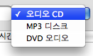
2 오디오 파일을 선택합니다
QuickTime 호환 파일들을 선택합니다. (오디오만이 포함된 비디오 파일도 가능합니다.)
주의: 보호된 오디오 파일은 지원되지 않습니다.
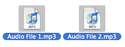
3 선택된 파일들을 목록으로 가져다 놓습니다:
선택된 파일들을 목록으로 끌어다 놓습니다. Burn은 이들을 사용할 수 있는지 검사할 것입니다.
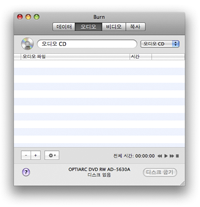 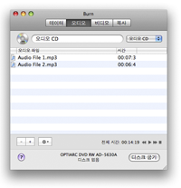
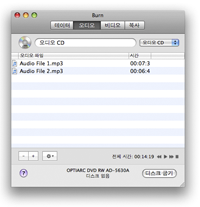
4 "디스크 굽기"를 클릭합니다
클릭하면 대화 상자가 열릴 것입니다.
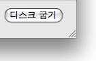
5 옵션을 선택합니다
굽기 세션의 옵션을 선택합니다. 더 자세한 설정을 하고 싶으시다면 Burn 메뉴 아래의 환경설정 메뉴를 선택하십시오.
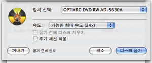
6 디스크를 굽습니다
디스크를 굽기 위해 "디스크 굽기" 버튼을 클릭합니다.
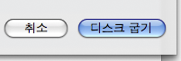
7 Burn이 디스크를 구울 것입니다
굽는 동안 Burn은 구워지는 상태를 나타내는 대화 상자를 보여드릴 것입니다.

1 MP3 디스크 또는 DVD-오디오를 선택합니다
팝업 메뉴에서 MP3 디스크 또는 DVD-오디오를 선택합니다.
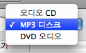
2 오디오 파일을 선택합니다
오디오와 비디오 파일들을 선택합니다. 더 많은 형식이 지원됩니다.
주의: 보호된 오디오 파일은 지원되지 않습니다.
3 목록으로 끌어다 놓습니다:
선택된 파일들을 목록으로 끌어다 놓습니다. 파일들이 이미 올바른 형식이라면 바로 목록에 추가될 것입니다. 만약 올바른 형식이 아닐 경우 Burn은 이들을 변환할 것인가를 물을 것입니다.
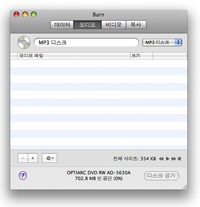 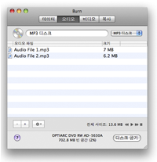
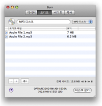
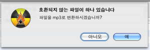
4 "굽기"를 클릭합니다
클릭하면 대화 상자가 열릴 것입니다.
5 옵션을 선택합니다
굽기 세션을 위한 옵션을 선택합니다. 더 자세한 설정을 하고 싶다면 Burn 메뉴 아래의 환경설정 메뉴를 선택하십시오.
6 디스크를 굽습니다
디스크를 굽기 위해 "굽기" 버튼을 클릭합니다.
7 Burn이 디스크를 구울 것입니다
디스크를 굽는 동안 Burn은 대화 상자에서 구워지는 상태를 보여드릴 것입니다.